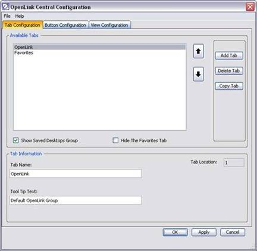
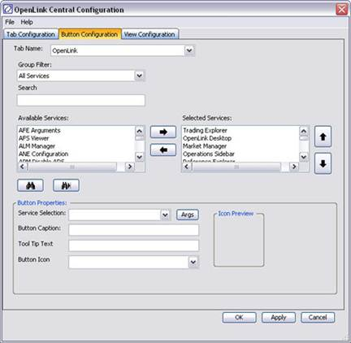
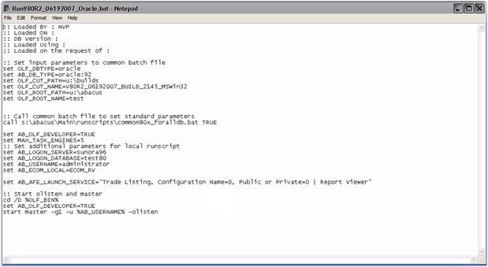
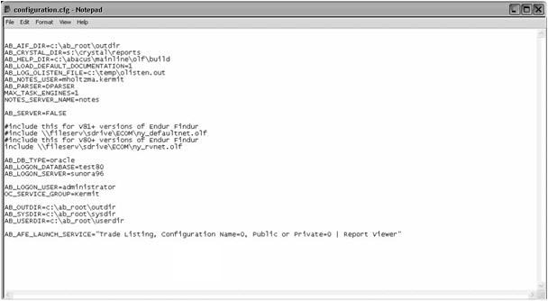
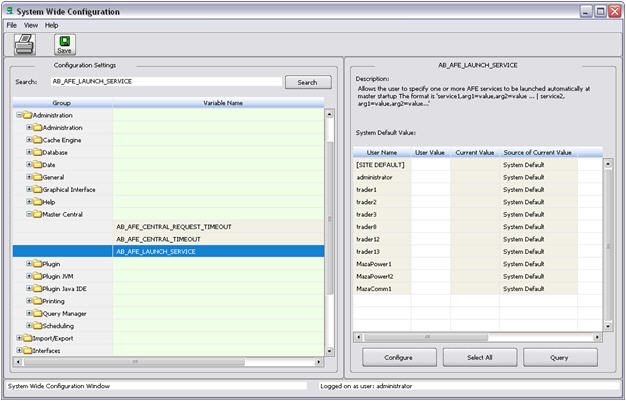
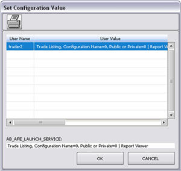
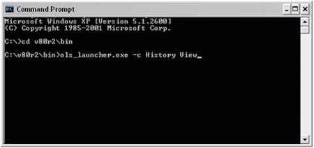

AFE (Adaptive Front End) Services can be configured on the OpenLink Central Console to launch screens/services directly (single-click access) without first opening the parent process. The process takes arguments at startup and launches the requested AFE Service(s). Once OpenLink Central is started, it can remain in the background listening for further requests.
AFE Services support is available in versions 8.0r2 and later.
Starting OpenLink Central as a background process is available in versions 8.1r1 and later.
The following table lists examples of AFE Services:
|
Index Definition |
Takes an index id as the input parameter (Arg), opening the Index Definition Screen when the AFE service is executed. |
|
Open File |
Uses a file name as the input parameter (Arg), opening the file via the operating system program associated with the file type. |
|
Allows users with Security Privilege 897 ‘Accept Trading Date Updates’ to change the Current Date of the system. No arguments are required. |
|
|
Enables the creation of OpenLink Central work environments that are relevant to users and their responsibilities by employing filtered pick lists. A keyword is used as the input parameter (Arg). |
|
|
Trade Listing by Query Id |
Employs a Query Id as the input parameter (Arg), opening the Trade Listing screen when the AFE service is executed. |
AFE Services Quick Start Guide
AFE Services FAQ
OpenLink Central can be customized to allow button and tab configurations where users can place frequently used components. These components and functionality are available through single-click access. Setting up AFE Services is typically a two-step process.
· Configure OpenLink Central for the AFE Services
· Launch AFE Services
This section outlines the steps to customize OpenLink Central. These steps are necessary if the AFE Service is targeted to access to custom functionality.
1. Using the OpenLink Central Configuration window, create new tabs, if desired, to organize the services to be added. In this same window, use the Button Configuration tab to configure buttons for services.

2. Customize a service with the addition of arguments using the OpenLink Central Config Service Arguments window by selecting the Args button.

3. In version 10.0R2 and above, “Derived Services” can be created. The OpenLink Central Config: Add Service window may be accessed from the OpenLink Central Configuration window or from the right-click menu on a system manager button on the console (see OpenLink Central).
4. Save the modified configuration (see OpenLink Central).
AFE Services can be launched via the following methods:
Run scripts used to start the OpenLink System can specify an Environment Variable to start the desired AFE services. The variable syntax is described in the following table:
|
set AB_AFE_LAUNCH_SERVICE=”Service<n>, arg<a>, arg<b> | Service<n>, arg<a>, arg<b>” |
|
where Service<n> - Represents the name of the service. |

5. Set the environment variable in the run script.
An example of this variable using the Trade Listing service and the Report Viewer service would be entered as follows:
set AB_AFE_LAUNCH_SERVICE=”Trade Listing, Configuration Name=0, Public or Private=0 | Report Viewer”
The Report Viewer service does not have any arguments associated with it and therefore does not need anything except for the service name.
6. Save the edited run script.
7. Execute the run script and the services will start after the user logs in.
Configuration files offer another way to launch AFE services when the application starts. The Environment Variable is the same as the one used in run scripts, however, there are differences in the use of the variable. The variable syntax is described in the following table:
|
set AB_AFE_LAUNCH_SERVICE=Service<n>, arg<a>, arg<b> | Service<n>, arg<a>, arg<b> |
|
where Service<n> - Represents the name of the service. |

8. Set the environment variable in the Configuration File.
An example of this variable using the Trade Listing service and the Report Viewer service would be entered as follows:
set AB_AFE_LAUNCH_SERVICE=Trade Listing, Configuration Name=0, Public or Private=0 | Report Viewer
The Report Viewer service does not have any arguments associated with it and, therefore, does not need anything except for the service name.
9. Save the edited file.
10.Start OpenLink Central and call the Configuration File. The services will start when the user logs in.
The following settings can be placed in a configuration file to launch the OpenLink System. Click here for details about LDAP (Lightweight Directory Access Protocol) parameters.
AB_LDAP_AUTHENTICATION
AB_SESSION_MANAGEMENT_USER
See Also
LDAP_External_Authentication_Quick_Start_Guide
AFE services can be started by setting the AB_AFE_LAUNCH_SERVICES variable from the System Wide Configuration window.

1. Start OpenLink Central.
2. Open Admin Manager and select “System Wide Configuration” on the General Administration tab.
3. Expand the “OpenLink Central” tree-view under the Administration folder.
4. Select “AB_AFE_LAUNCH_SERVICE”.
5. Select a user and click the Configure button. The Set Configuration Value window displays.

6. Enter services for the variable in the “User Value” field and click OK. The services are entered in the following form:
|
Service<n>, arg<a>, arg<b> | Service<n>, arg<a>, arg<b> |
|
where Service<n> - Represents the name of the service. |
An example of this variable using the Trade Listing service and the Report Viewer service would be entered as follows:
Trade Listing, Configuration Name=0, Public or Private=0 | Report Viewer
The Report Viewer service does not have any arguments associated with it and therefore does not need anything other than the service name.
7. Click the OK button in the Set Configuration Value window and then the Save button in the System Wide Configuration window to commit changes to the database.
8. Restart the application and the services will start after the user logs in.
All OpenLink Services can be integrated into the Microsoft Windows StartàPrograms menu.
1. Start OpenLink Central.
2. Select the menu item Available ServicesàLaunch Available Services.
3. Navigate to Desktop ShortcutsàAll Services in the Available Services panel.
4. Click OK. This launches the installation of the service shortcuts to the StartàPrograms menu.
5. Click OK to accept the successful installation message.
6. Navigate to StartàProgramsàOpenLink and verify the shortcuts were created.
7. Launch a service. If the selected service can accept arguments, a default set of arguments will be assigned and launch the service.
Starting services via Command Line Options is particularly useful for launching screens automatically at a desired time.
1. Start OpenLink Central.
2. In the Command Prompt window, navigate to the bin directory of the OpenLink installation.

3. Type ols_launcher.exe –c <service name> where service name is the service to start. Services are entered in the following form:
|
ols_launcher.exe [-c <service name>] |
|
where -c – Tells the executable to take input from the command line. |